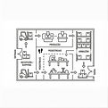

Projetos mecânicos
CAD, modelagem 3D, detalhamento ABNT, BOM e documentação técnica.
Abrir ?Esta página resume as frentes de trabalho da Zacardi. Use os cards abaixo para abrir cada serviço com o texto completo.

CAD, modelagem 3D, detalhamento ABNT, BOM e documentação técnica.
Abrir ?Preparação de arquivos e informações para processos industriais.
Abrir ?As-Built, layout fabril, fluxo e tubulação.
Abrir ?Linhas de produção, integração mecânica e melhoria de fluxo.
Abrir ?Análise de máquinas, proteções e documentação técnica.
Abrir ?5S, POPs, melhoria contínua e TPM básico.
Abrir ?